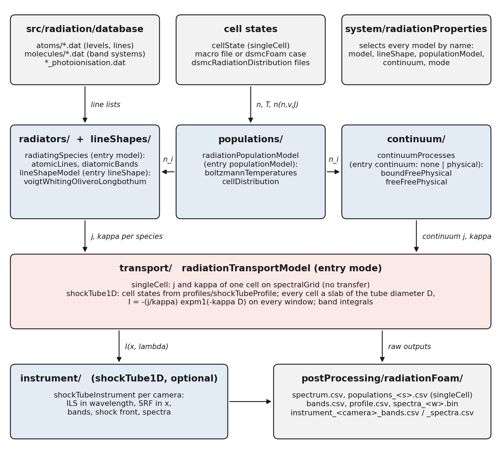

Architecture
The present page is a map of libradiationFoam (src/radiation): its
directories, the pattern its classes follow, the run-time selection tables
and the path of the data from the level populations to the measured
spectrum. The layout dates from the restructure of 2026-11-14
(docs/RADIATION_RESTRUCTURE.md); src/radiation/README.md keeps the
same map next to the code.
Design rules
One library, no DSMC dependency.
libradiationFoamlinksOpenFOAM,finiteVolumeandmeshToolsonly; the last two are needed by thedsmcCaseprofile reader, which reads the mesh and the fields of a dsmcFoam case. The classes work on plain data and include no cloud or parcel header. The DSMC-side classes live in the plug-inlibdsmcRadiationCouplingof the DSMC repository (Coupling with dsmcFoam).A thin application.
radiationFoam.Cbuilds the species, the population model and the continuum and runs the transport model named bymode. All physics, input and output are in the library.Basic and derived classes. Every family that has alternatives is an abstract base class in
<family>/basic/with a run-time selection table, and its models in<family>/derived/, each selected by a dictionary keyword. Classes without alternatives (data containers, readers, pipelines) sit in their own directory.Line lists once, populations per cell. Radiators read their data and build their line lists at construction. Per cell, only the populations, the line widths and the placement of the lines on the grid are computed.
Every keyword is read where it is used, so a class’s header lists its own dictionary entries (Input Reference).
Directory map
Directory |
Classes |
Role |
|---|---|---|
|
|
uniform wavelength grid (nm in the dictionary, m stored) |
|
|
state of one cell: n and temperatures per species, \(n_e\), \(T_e\), optional level distribution (and its file reader) |
|
|
the levels a radiator needs: key, g, E (and the energy parts and state constants of diatomics); the contract between radiators and population models |
|
|
base of the radiators (entry |
|
|
bound-bound lines of atoms and atomic ions, widths, electron-impact Stark broadening |
|
|
band systems of diatomics line by line; split by role into
|
|
|
base of the line profiles (entry |
|
|
approximate Voigt profile integrated per bin |
|
|
base of the population models (entry |
|
|
Boltzmann re-expansion at the cell temperatures |
|
|
the cell’s own level distribution, optional fill of missing levels |
|
|
base of one continuum process of one atomic species |
|
|
container of the processes of a case (entry |
|
|
photoionisation with the Milne relation; Kramers bremsstrahlung |
|
|
base of the transport modes (entry |
|
|
one cell, coefficients only |
|
|
1-D profile, slabs of the tube diameter, bands, instrument |
|
|
cell states of a 1-D profile: macro file or dsmcFoam case |
|
|
base of the instrument kernels (entry |
|
|
the kernels |
|
|
EAST spectrometer pipeline: line shape, spatial response, bands, shock front |
|
data |
atomic and molecular files, generators and sources (Database files and generators) |
src/radiation/Make/files lists the sources group by group in this
order, one comment line per group, and builds
$(FOAM_USER_LIBBIN)/libradiationFoam.
Run-time selection tables
Six families are selected at run time by a dictionary keyword. Each base
class declares its table with declareRunTimeSelectionTable and defines
it with defineRunTimeSelectionTable; each model registers itself with
addToRunTimeSelectionTable under the name of its TypeName.
Base class |
Keyword |
Constructor arguments |
Models ( |
|---|---|---|---|
|
|
|
|
|
|
|
|
|
|
|
|
|
set by |
|
|
|
|
|
|
|
|
|
|
The selectors (New) live in <Base>New.C. An unknown name stops with
FatalIOErrorInLookup, which prints the list of registered names. Two
selectors also reject a removed name with an explicit message
(continuum piclas in continuumProcesses.C,
type piclasInstrBroadening in instrumentFunctionNew.C).
The continuumModel table is not driven by a user keyword:
continuumProcesses decides from continuum and the species entries
which processes exist (boundFreePhysical for an atom with an
ionSpecies, freeFreePhysical for an ion) and selects them by name.
Coefficient dictionaries follow the OpenFOAM convention where a family has
several models: a radiator reads <model>Coeffs of its species
(subDict, required), a population model <model>Coeffs of
radiationProperties (subOrEmptyDict, optional). Instrument
functions read their coefficients from their own dictionary.
Data flow


Data flow of radiationFoam. Inputs on top, the run-time selected
families of src/radiation in the middle, the transport layer and the
instrument below. Script:
_static/figures/diagrams/make_dataflow.py.
In words, for one cell and one spectral window:
Set-up (once). Each radiator reads its transition file and builds its levels (
radiationLevels) and line list.continuumProcessesbuilds the bound-free and free-free models and reads the photoionisation tables.Cell state. The transport model fills a
radiationCellState: number density and temperatures of each radiating species, \(n_e\) and \(T_e\), fromcellState(singleCell) or fromshockTubeProfile(shockTube1D), plus the level distribution read from a file when the population model iscellDistribution.Populations. For each species, the radiator passes its
radiationLevelsto the population model, which returns the number density of every level and the bound limit (the lowered ionisation limit).Coefficients. Each radiator adds its emission \(j_\lambda\) [W m-3 sr-1 m-1] and absorption \(\kappa_\lambda\) [m-1] on the grid (
radiatingSpecies::addEmissionAbsorption): line strengths from the populations, widths from the cell state, profiles from the line-shape model, placed as bin integrals.continuumProcessesadds the continua.Transport.
singleCellwrites the coefficients.shockTube1Dconverts them into the radiance across a uniform slab of the tube diameter \(D\), \(I_\lambda=-(j_\lambda/\kappa_\lambda)\,\mathrm{expm1}(-\kappa_\lambda D)\), integrates the bands and writes the spectra.Instrument. After the cell loop,
shockTube1Dpasses the field \(I(x,\lambda)\) of each camera toshockTubeInstrument: line shape in wavelength, spatial response in x, band profiles, shock front, measured spectra.
Dependencies between families
common/ <- used by every family
lineShapes/ <- radiators/atomicLines (diatomicBands has its own Voigt table)
populations/ <- radiators/, continuum/
radiators/ <- continuum/ (levels of the species and its ion), transport/
continuum/ <- transport/
profiles/ <- transport/shockTube1D
instrument/ <- transport/shockTube1D, applications/test/radiationInstrument
instrument/ depends on nothing else in the library and can be used
alone, as the test application does.
What each base class requires of a model
Base class |
Pure virtual members |
|---|---|
|
|
|
|
|
|
|
|
|
|
|
|
The step-by-step recipe for adding a model to one of these families is in Adding a Feature; the classes themselves are documented in Library Classes.